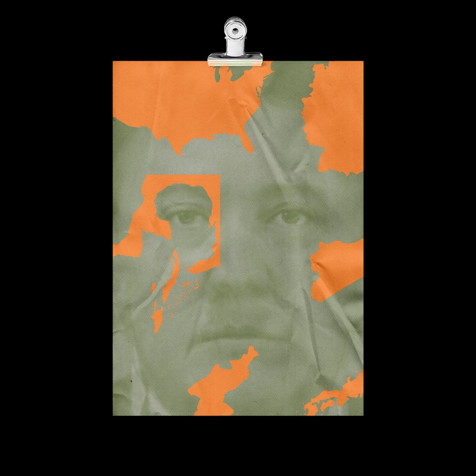

PROYECTO PERSONAL - AÑO - 2018
Las frutas, son alimentos increíbles que desgraciadamente hoy lo damos
por hecho y no aprovechamos de sus cualidades naturales. Es decir, hoy
en día las frutas ya están intervenidas ya sea con pesticides, GMOs,
alteración en su ADN, y mas. A pesar de esto, nosotros los seres humanos
hemos creado un cierto tipo de tendencia, de la necesidad de empaquetar
todo dentro de bolsas de plástico, incluyendo las frutas cuyo es
totalmente innecesario debido a que las frutas en sí, tienen su propio
empaque natural. En este ejercicio fotográfico, quise intervenir fotos
de frutas dentro de bolsas de plástico, y darles colores vibrantes y
saturados para exaltar lo innecesario y lo redundante que podemos ser.
